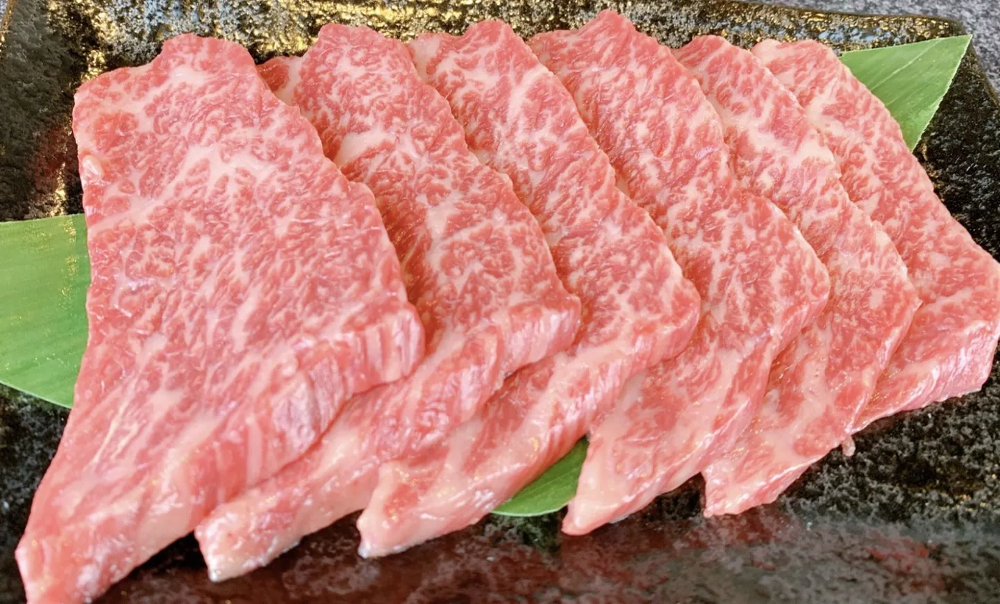
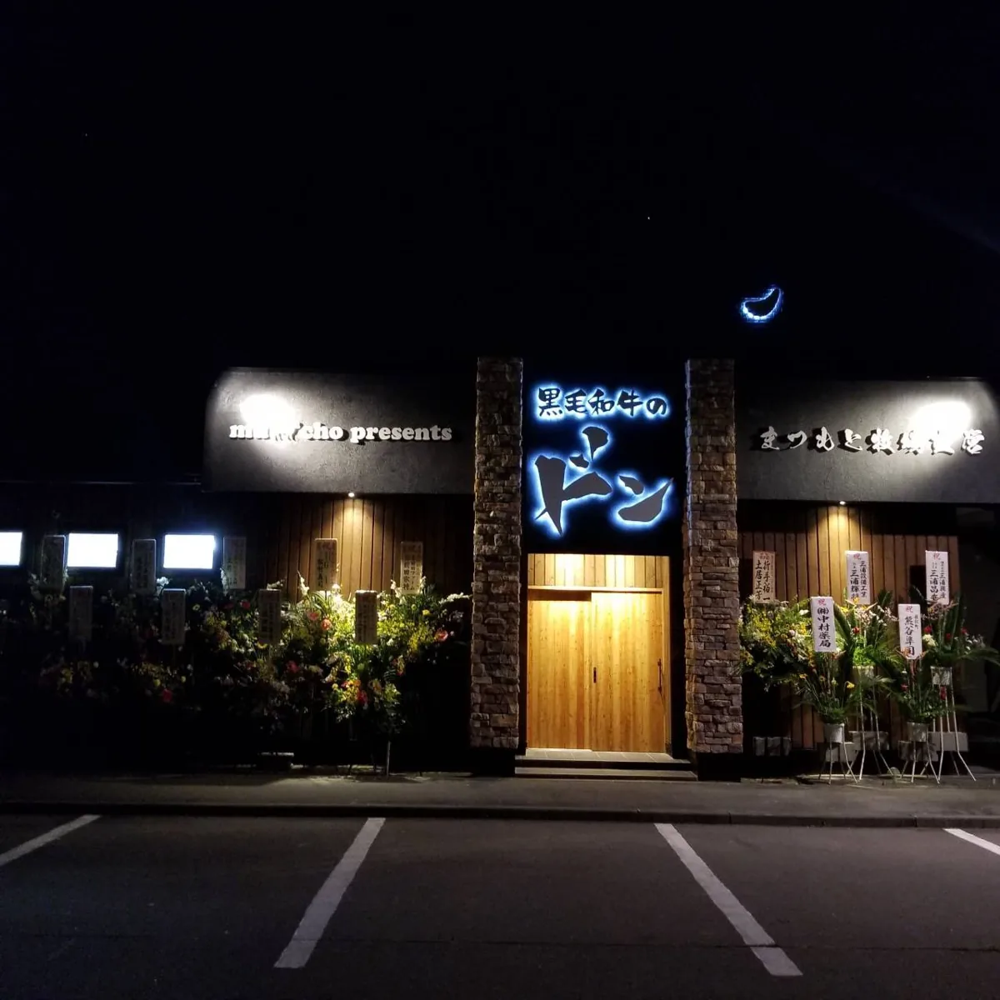

ABOUT THE SHOP
このお店のこと。
2019年8月29日に開店したと紹介される「黒毛和牛のドン」。まつもと牧場が名づけた「こぶ黒」は、昆布と黒毛和牛を合わせた名前です。現サイトでは飼料へのこだわりとともに、焼肉や一品料理が紹介されています。三石の昆布と畜産のつながりを、食事を通して知ることができます。
出会える味、もの、サービス。
こぶ黒の焼肉
昆布を食べて育った黒毛和牛。部位や仕入れ状況はお店へ。
一品料理
焼肉のほかにも料理を紹介しています。現在のメニューは要確認。
健酵豚
地元の豚肉も現サイトに掲載されています。
PHOTO JOURNAL
写真でのぞく、お店の魅力。


写真は現サイトの店舗紹介から保存したものです。撮影当時の内容で、現在の外観・商品・提供状況とは異なる場合があります。写真を押すと大きく表示します。